Create Empties from Selected
Object |
Edit Mesh |
Edit Curve |
Edit Armature |
Pose |
DEMO
Object Mode (Individual)
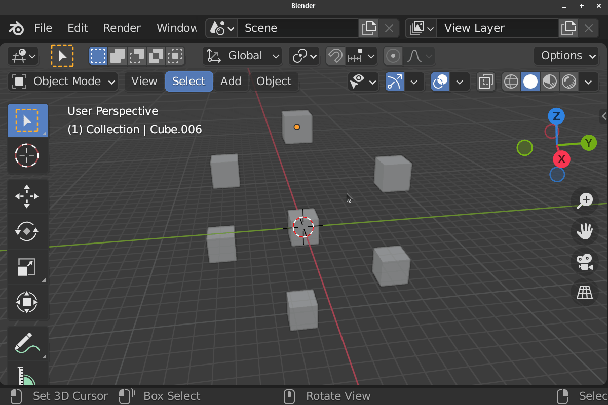Object Mode (Median)
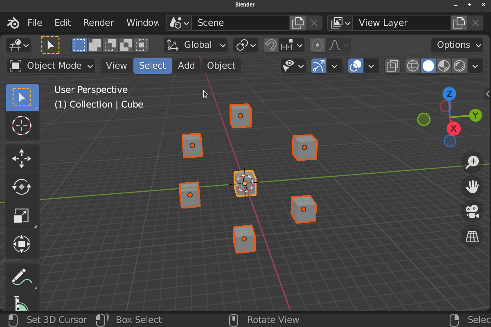Edit Mesh Mode (Individual)
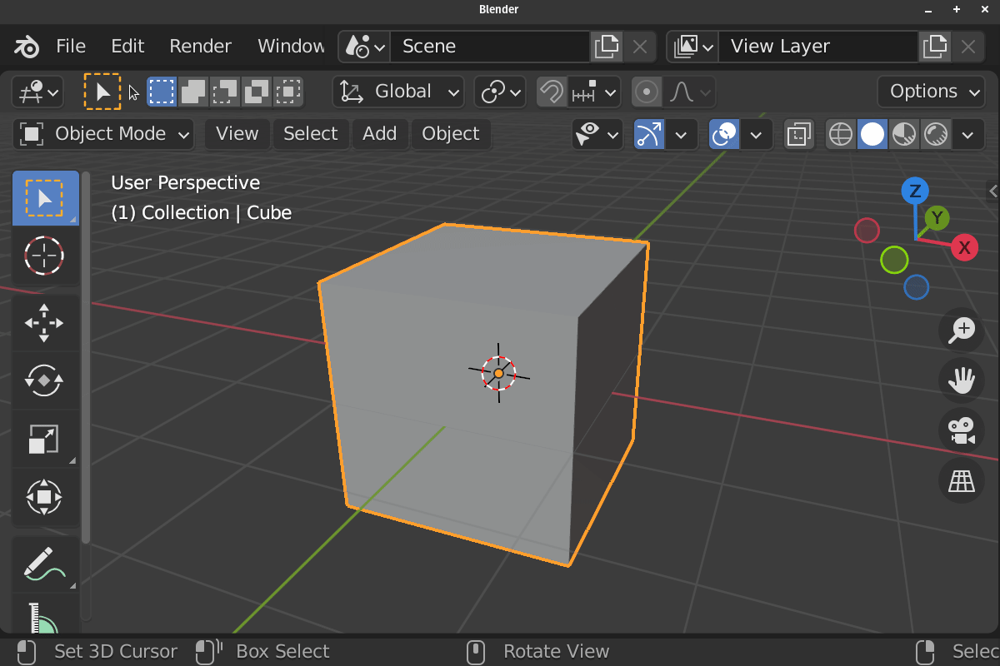Edit Mesh Mode (Individual)
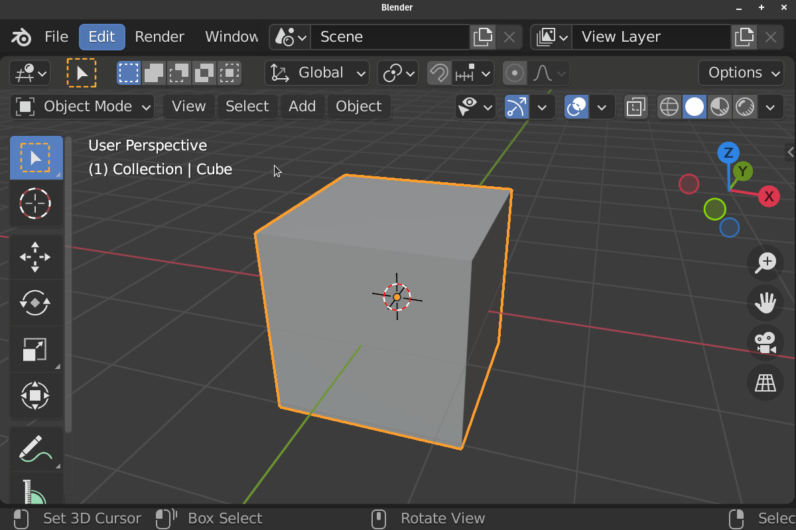Edit Curve Mode (Individual)
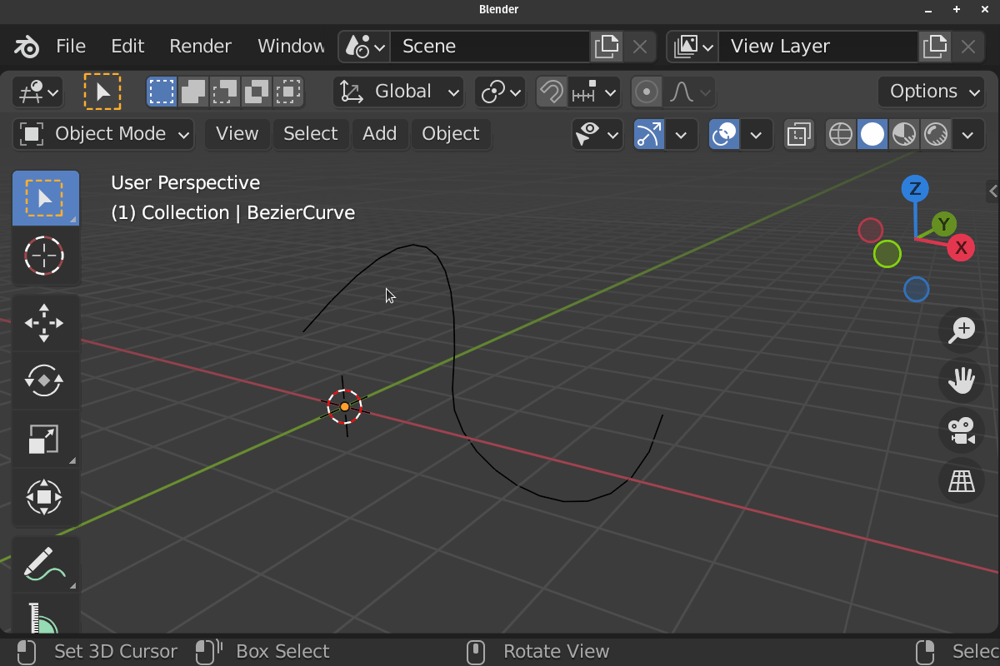Edit Curve Mode (Median)
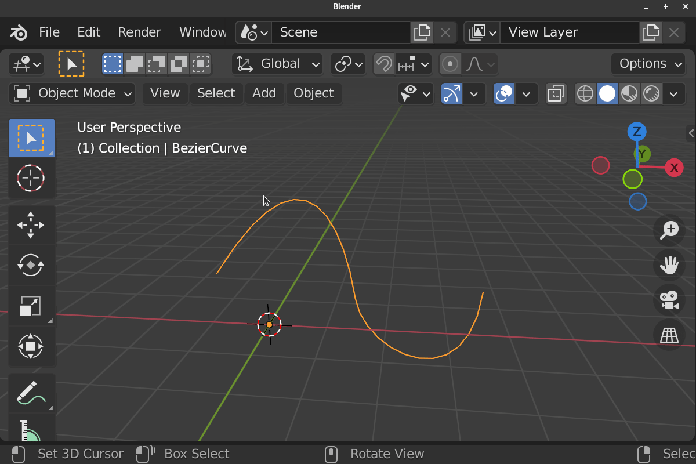Edit Armature / Pose Mode (Individual)
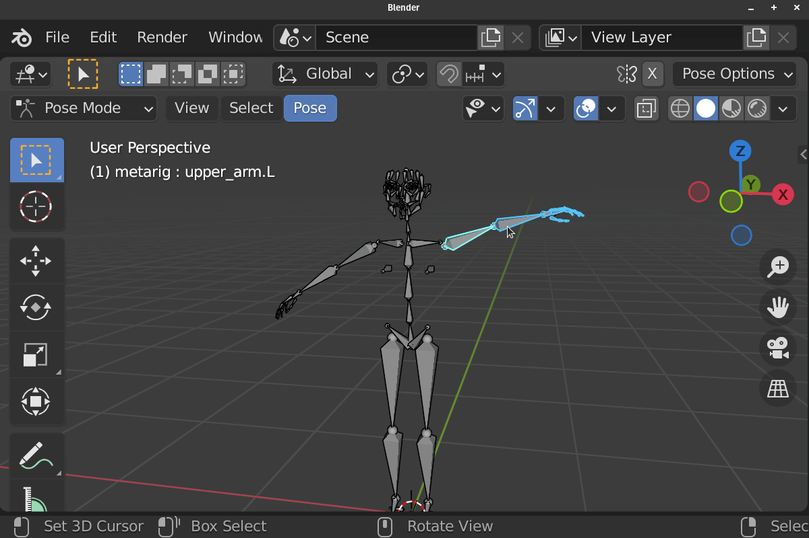Edit Armature / Pose Mode (Median)
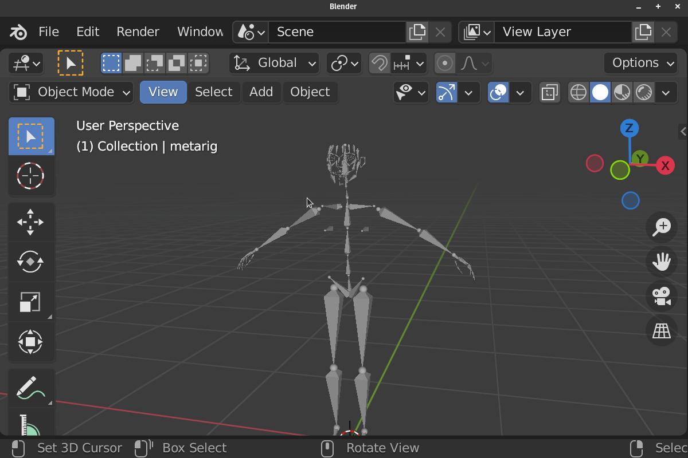 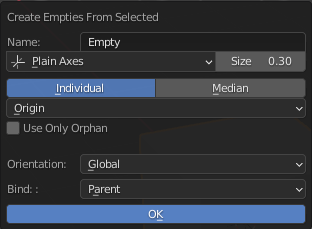This Operator Create Empty from Selected Objects / Elements base on the context.
This Operator can Create One Empty at the Selected Midpoint or It can Create an Empties for each selected items.
Basic Parameter
Name: Base Name of the Empty
Empty Shape: Empty’s Shape
Display Size: Empty’s Display Size
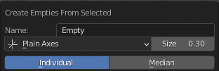Mode:
- Median
Create One Empty at the Selected Object / Elements
- Individual
Create Empties for each Selected Object / Elements
Position Mode (Object Mode Only)
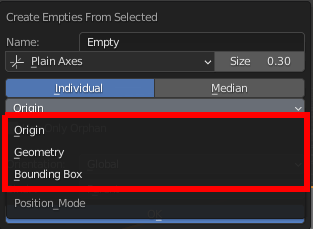Ways to Calculate Midpoint of the Objects
- Origin
Use Object’s Origin to create Empty or calculate Median
- Geometry
Use Geometry’s Midpoint/Median for Mesh, Curve or Armature Object to create Empty or calculate Median, Other type of Object will use it’s Origin
- Bounding Box
Use Geometry’s Bounding Box Center for Mesh, Curve or Armature Object to create Empty or calculate Median, Other type of Object will use it’s Origin
Elements
Elements use to create the Empties
- Edit Mesh (Individual Mode Only)
Vertices
Edges
Faces
- Edit Armature / Pose
Center: Use Bone Center to Create Bone or to Calculate Median or Bounding Box
Head: Use Bone Head to Create Bone or to Calculate Median or Bounding Box
Tail: Use Bone Tail to Create Bone or to Calculate Median or Bounding Box
Bezier Handle (Edit Curve Only)
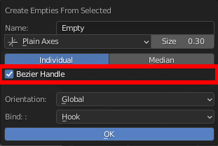Create Empties For Bezier Handle
Parent To Objects (Edit Mesh Only)
Parent The Created Empties to it’s Reference Object (Useful with Hook)
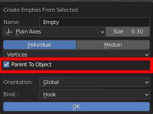Use Only Orphan (Object Mode Only)
Ignore Objects with parents
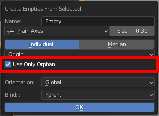Orientation
Set Up Bone’s Tail Position
- Global
Set the Orientation of the Empty to be 0 in the global space
- Local
Set the Orientation of the Empty to be 0 in the Local space of the Reference Object
- 3D Cursor
Use the Orientation of 3D Cursor for the created Empty
- Roll (Edit Armature, Pose)
Use the Roll of the bone as Oreintation for the created Empty
- Normal (Edit Mesh Only)
Orient the Empty to the Normal of the Selected Vertex, Edge Center or Face
- Edit Mesh Mode:
- 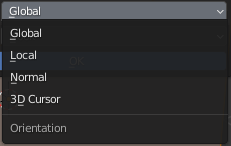
- Edit Armature / Pose Mode:
- 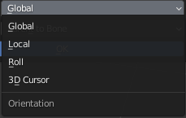
Bind Option
Bind Mode
Method to bind the selected objects/elements to created Empty
- Parent (Object Mode)
Parent Reference Object to Created Empty
- Hook (Edit Mesh and Edit Curve)
Hook selected Nurb Points, Bezier Points, Vertex, Edge or Face to Created Empty
- Parent To Bone (Edit Armature and Pose)
Parent Created Empties TO Reference Bone